TÜRKİYE'NİN GÖKYÜZÜNDEKİ BAŞARI İMZASI:
Yerli İHA ve SİHA'lar
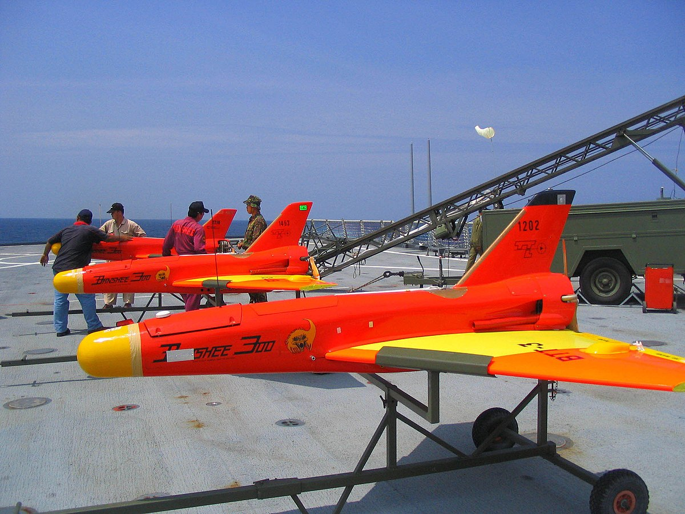
Meggit firması üretini Banshee sistemi
TSK'nın
kullandığı ilk İHA olarak kayda girdi.
İlk üretilen yerli İHA olan İHA-X1-Şahit sistemi
TUSAŞ tarafından hayata geçirildi. Şahit iki adet
üretildi,
ancak seri üretim gerçekleşmedi.

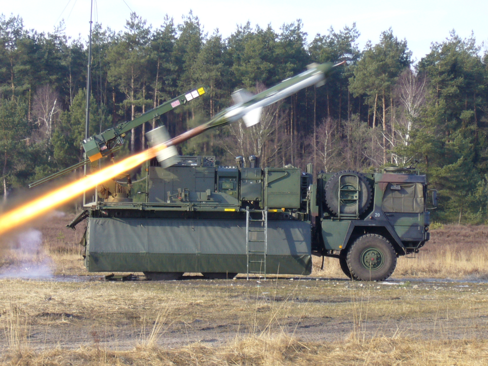
Almanya tarafından 5 adet CL-89 İHA hibe edildi.
Lojistik sıkıtnılar ve kazakırımlar nedeniyle kısa
sürede içinde envanterden çıkarıldı.
TSK envanterine gerçek anlamda katılan ilk İHA
sistemi
ABD'den alınan GNAT-750 oldu.
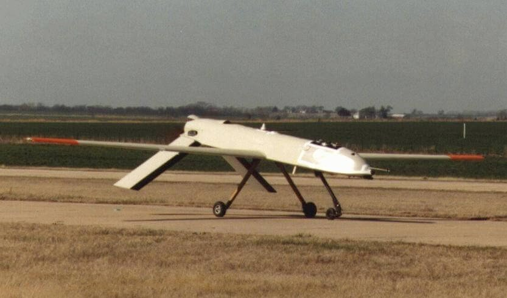
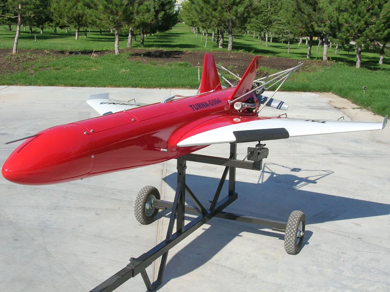
TUSAŞ üretimi Tunra ve Keklik, takip hedef uçağı
TSK
envanterine girdi.
Martı insansız hava aracının prototipi üretildi.
Aynı yıl Pelikan İHA çalışması başladı.
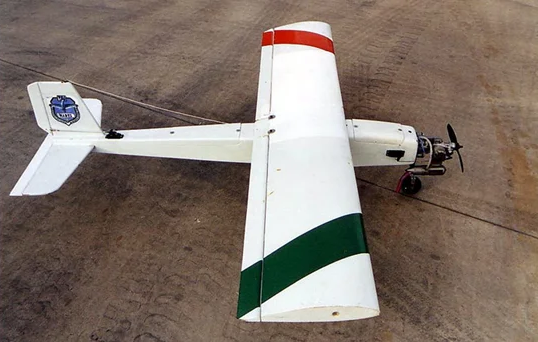
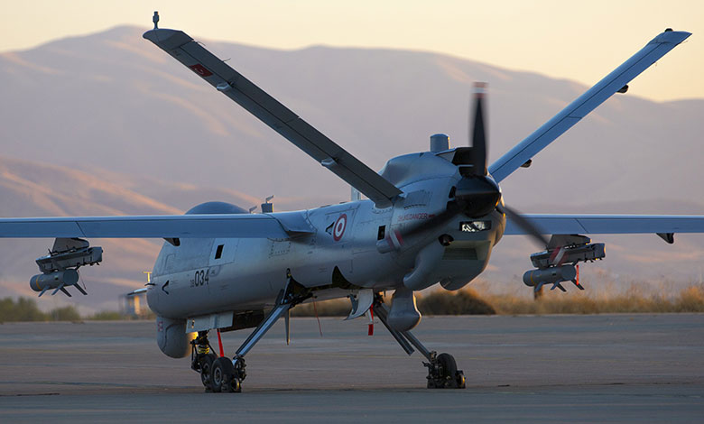
SSM ile imzalanan sözleşme ile
ANKA Geliştirme Projesi başlatıldı.
Baykar Savunma tarafından Malazgirt döner kanal mini
İHA'sını
geliştirmeye yönelik çalışmalar başladı.
Proje 2009 yılında tamamlandı TSK'ya teslim edildi.
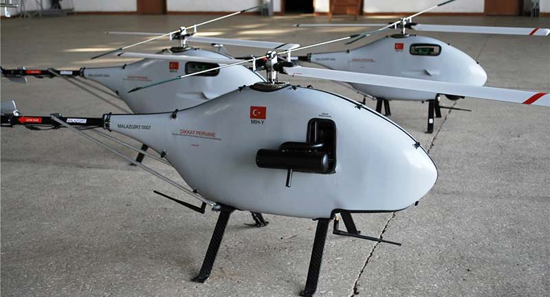
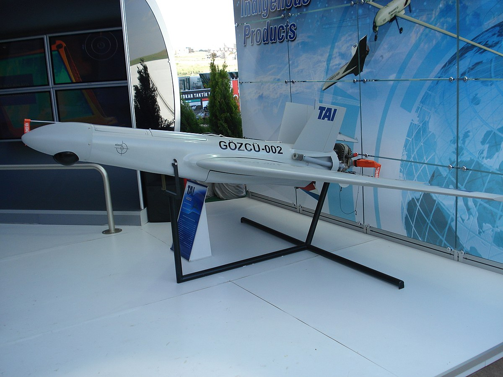
TAİ Gözcü Taktik İHA projesi hayata geçti.
Bayraktar'ın taktik İHA'sı ve Vestel'in Karayel'i için
ilgili firmalar prototip geliştirmeye başladı, ilk
uçuşlar 2009'da gerçekleşti.
Türkiye'nin İsrail'den aldığı Heron'lar kullanılmaya başlandı. Projede çok ciddi sıkıntılar baş gösterdi.
Temmuz ayında hangardan çıkan ANKA,
ilk uçuşunu aynı yıl aralık ayında yaptı.
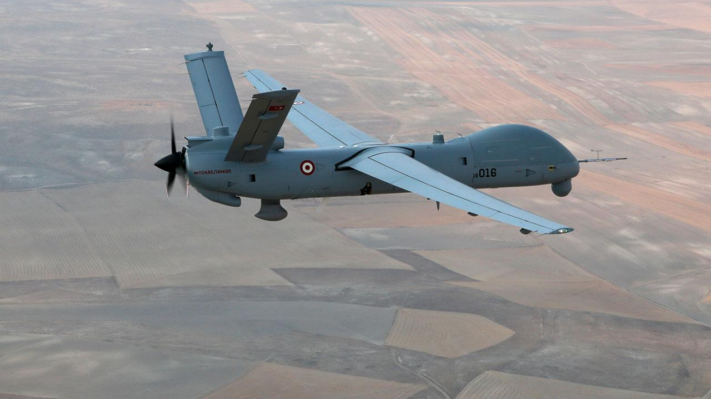
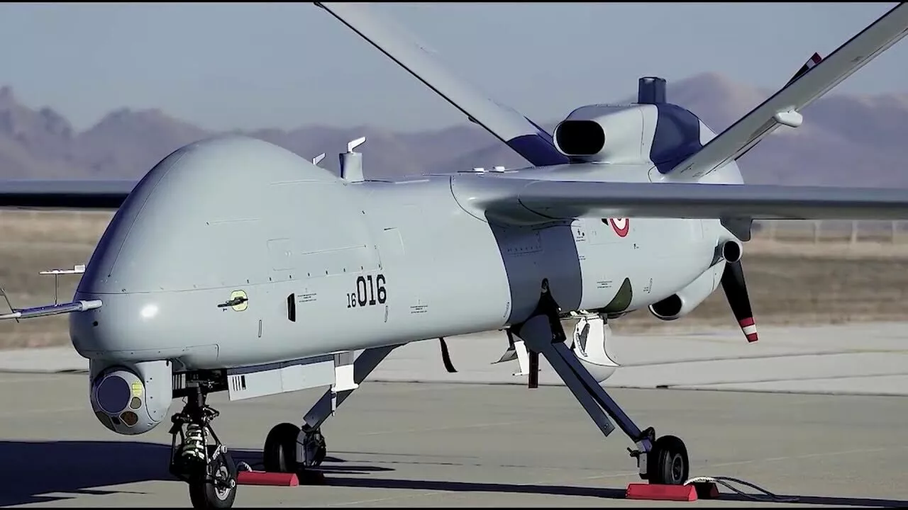
ANKA'nın kabul testleri tamamlandı.
Ülkemizde ilk kez silahlı İHA sisteminin gösterimi
gerçekleşti.
Bayrkatar TB2'nin ilk aşama kabul testleri tamamlandı. 2015 yılında operasyonel uçuşlar başladı.
Vestel Karayel, TSK tarafından operasyonel olarak
kullanılmaya başlandı.
Bayraktar TB2, ilk kez silahlandırıldı.
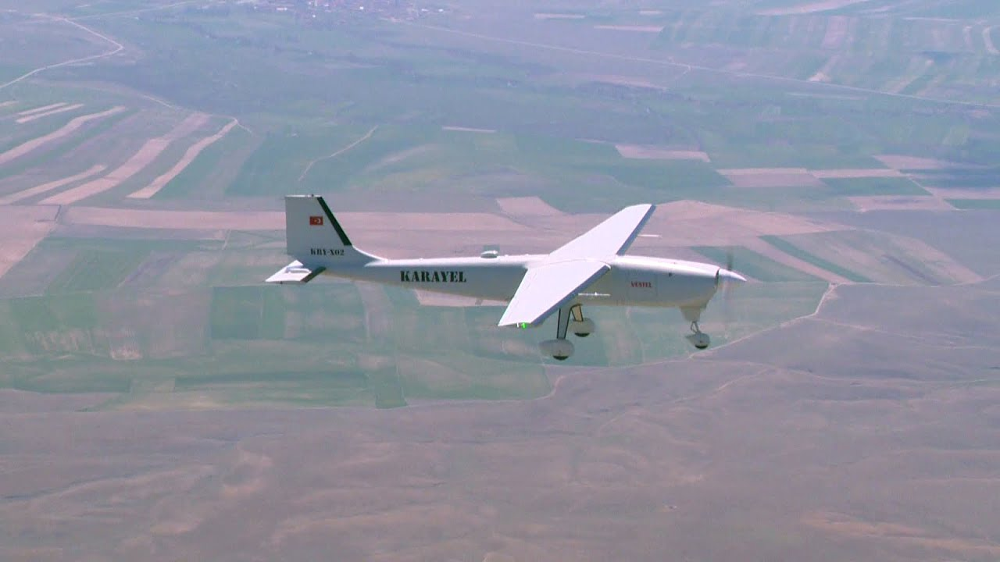

ANKA-S sistemi ilk uçuşunu icra etti.
ANKA-S sistemi Hava Kuvvetleri envanterine girdi.
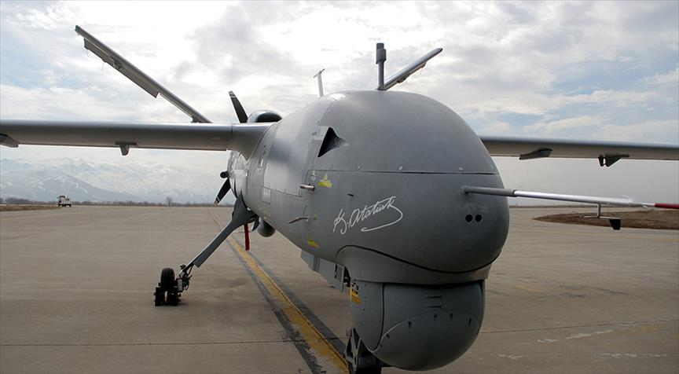
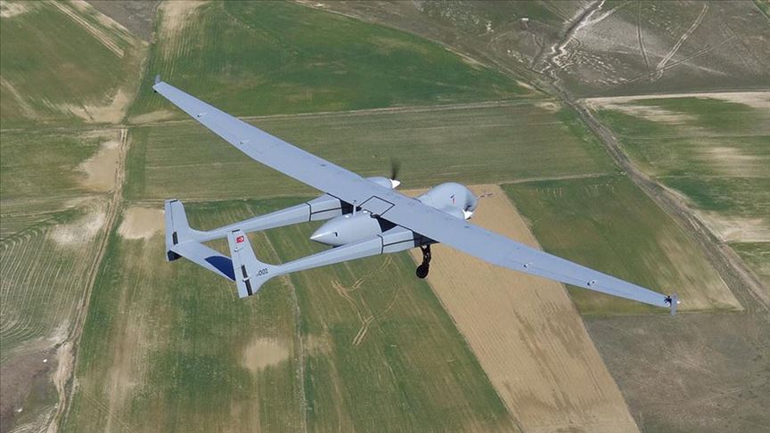
Anka-Aksungur ilk uçuşunu 20 Mart'ta gerçekleştirdi.
Akıncı TİHA ilk uçuşunu başarıyla gerçekleştirdi.